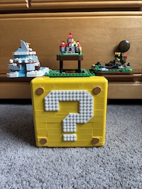
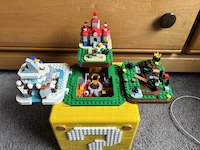
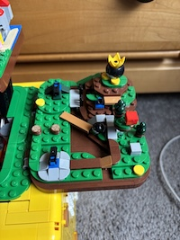
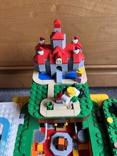
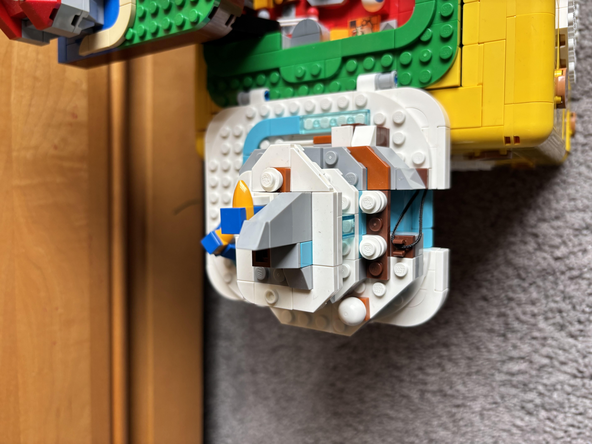

“Super Mario 64 ? Block” LEGO Set: Amazing Display Piece and Building Experience for Mario Lovers





Images taken by author
The “Super Mario 64 ? Block” LEGO set is a 2064-piece set of a ? Block from the Super Mario series. It is rated as ages 18+. The top face of this block can swivel and open up, revealing four different areas from the game Super Mario 64 on the Nintendo 64. These areas can be identified as Peach’s Courtyard, Bob-Omb Battlefield, Cool Cool Mountain, and Lethal Lava Land. Lethal Lava Land is embedded in the block, and the other three areas are on top of platforms that fold out and suspend over the sides of the block.
Detail/Accuracy:
I will begin by discussing the ? Block itself. The body of the block is a bright yellow color that feels like it comes directly from the video games. The makeup of question mark panels on all four sides of the block are tackled masterfully; the question mark itself gives the exact blocky appearance from the games. While the yellow on these panels is smooth, the question mark has uncovered studs, keeping the nature of LEGO within the set. The main area of the three courses the set includes– the three on the bottom row when everything is folded out, are tiny yet accurate. As a Mario superfan, I recognize that the layout of these shrunken-down worlds feels perfectly accurate to how they actually are in the game. Every ramp, hill, major character, and major asset are included. The amount of detail this set uses in each of these levels is extremely impressive. Even if you are not that familiar with the game, you can get a sense of the atmosphere of each of these levels and see the paths you take just by looking at it. The characters are scaled slightly larger than they should be in relativity to the lands, but only by a bit. I am satisfied with the scale that LEGO went with because, if they were any smaller, you would not really be able to make them out. You could probably lose them very easily too.
The level of detail is so high that the set even includes easter eggs that you either cannot see once the set is done, or you can only see from the back or a tricky angle. One of these is the interior of Peach’s castle. As you build it, you build the floor, walls, and paintings inside the castle. They get covered up eventually, but they make the building experience that much more fun. They even included a mini Yoshi for the top of the castle, which you superfans will know that he appears there once you get all 120 stars on Super Mario 64. While tiny, these details make all the difference between a good set and a great set in my mind. Overall, the colors of this set are very fun and bright, reflecting the nature of the Mario video games, especially Super Mario 64. The amount of detail is to admire, especially for fans of Super Mario 64. I really cannot complain about the way this set was tackled. There is truly nothing it is missing or misrepresenting.
Functionality/Transportability:
With outer and inner layers of the ? block, it is quite bulky. This has its pros and cons. The different platforms with the course sitting on top of them will not break easily. However, they need to be folded together very precisely to be able to fit together. This can be a bit frustrating.
The block has two additional compartments; one at the top that slides open, and one at the bottom that swings open. The one that slides open features a platform where you can find Bowser, which is a neat touch. The bottom one features a round, rotatable platform. It is unclear what this is used for. If I had to guess, it would be for roleplaying the final boss fight between Mario and Bowser. When swinging this open, it loosens the bottom corners of the block. I had to press them back together several times while using this function, which has gotten annoying. The major takeaway I have with the functionality of the set is that you need to store it in an area that is significantly larger than the set itself. This is because the block needs a lot of room behind it to swivel open and close. I originally stored it in a pretty small shelf with a back and low top, and it was difficult to use there. It was not too scary to transport because of its heftiness, but you definitely need to be careful since the set has several large parts that are not 100% sturdy. All of the small pieces actually attach to the set, so you do not need to worry about losing them once you place them on.
Brightly colored, brimming with detail, and scaled appropriately, this set is very well done. Even though it is bulky, it is worth it due to the sheer amount of detail the set captures. If you are a fan of Super Mario 64 like me, or Super Mario in general, you would probably go crazy over this set. The set has some neat functions, but I honestly just prefer looking at it with the courses all folded out as depicted in the image.
This set was retired on July 15, 2024.
I am curious as to why; maybe the amount of sales it was receiving was slowly diminishing. While the LEGO set was priced pretty high in my opinion, at $159.99, this is super great pricing compared to more recent LEGO sets that go for even more for that. Take the Pikachu and Pokéball LEGO set for example, which is priced at $199.99. Don’t get me wrong, this set is super detailed, but it has almost the same amount of pieces and is smaller than the ? Block set. Now, you cannot get it for $159.99 anymore. I think the purchase was worth it for me. It is on resale on Amazon for $245, which I think is definitely pushing it. Even though I love this set, it is hard for me to recommend it now that it is retired. I will be hoping that they bring it back because I think that every Mario superfan needs to experience building this set.